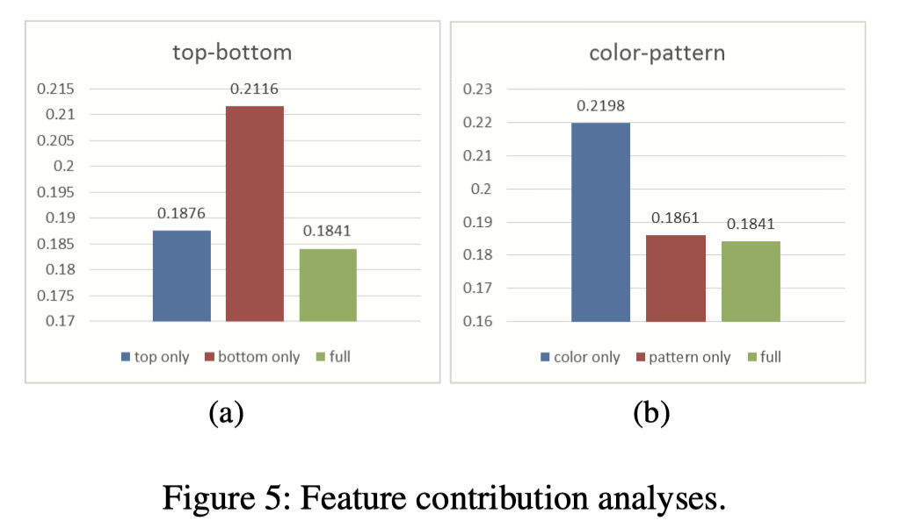

Towards Better Understanding the Clothing Fashion Styles: A Multimodal Deep Learning Approach
About
标题
Towards Better Understanding the Clothing Fashion Styles: A Multimodal Deep Learning Approach
争取更好地理解服装的时尚风格：一个多模态深度学习的方法
发表时间期刊
2017年 AAAI
作者
Yihui Ma：清华大学计算机科学与技术系
Jia Jia*：清华大学计算机科学与技术系博士生导师、副教授
Suping Zhou：北京邮电大学
Jingtian Fu：清华大学计算机科学与技术系，清华大学美术学院
Yejun Liu：清华大学计算机科学与技术学院，清华大学美术学院
Zijian Tong：搜狗公司
实验室
清华大学信息科学与技术国家实验室（TNList）Key Laboratory of Pervasive Computing
Content
基本概念
视觉特征：领口形状、裤子长度、颜色主题等
服装风格：浪漫、优雅、经典等
服装时尚风格在很大程度上得益于视觉细节，如何弥合两者的差距？
过去的研究
解析服装纹理属性（2014）
建议综合应用系统来共同解析一组服装图像（2015）
专注于面向场景的服装推荐（2012）
欣赏上身男装的审美效果（2016）：不具有普遍性，忽略了上下搭配的影响
两个挑战及解决办法
Q1：如何定量描述各种服装的时尚风格？
A1：建立基于小林美学理论的时尚语义空间（FSS）来定量描述服装风格
什么是FSS?
它是一个二维图像尺度的空间（warm-cool and soft-hard），包含购物网站上的数百个词。基于FSS不仅可以对时尚搭配进行定量评估，还可以直观地分析时尚潮流的动态变化。
Q2：如何建立视觉特征和时尚风格之间的微妙关系（特别是服装搭配）？
A2：提出了一个基于时尚的多模态深度学习模型–双模态相关深度自动编码器（BCDA）来捕捉服装搭配中的相关性，与回归相连接，以实现将视觉特征映射到FSS的任务
该BCDA有什么特点？
将上衣和下装看作服装搭配的两个模态，利用多模态深度学习的共享表述来学习模态之间的关系。此外，通过将服装类别（西装、大衣、紧身裤等）作为相关标签改进特征学习过程
实验方法
1. 建立时尚语义空间FSS
0）语义空间是小林在1995年提出的一个针对艺术设计的概念，将180个关键词放在划分为16个审美类别的尺度空间坐标中。
1）将亚马逊网站上近三年的服装类的评论中的词语划分出来
2）使用WordNet（1995），重训练形容词
3）人工移除不常用的形容词（比如 happy、sad），获得527个形容服装风格的词汇
4）使用WordNet::Similarity（2004）计算关键词与美学词的语义距离，选择三个距离最短的关键词，它们的加权算术平均值可以被视为坐标值

2. 建立双模态相关深度自动编码器
0）传统的深度自动编码器是一种特征学习的方式，但无法用来发现上装和下装的内在关系。
1）改造双模态深度自动编码器（2011）用于服装的特征学习，将上下衣特征作为两个模态输入，通过中间隐藏层的编码网络和解码网络，输出共享的表征（middle layer）
相邻两层之间的关系取决于模型参数。训练结束后，我们确定参数并学习中间表征作为该步骤的输出。
2）由于时尚风格受服装类别影响大（2016 具有相似视觉特征的服饰是不同的类别，比如西装和大衣），所以将服装类别标签引入到原始的对称结构中（黄色部分），使用神经网络重新获得相关标签c，同时重建特征x（体现在cost function代价函数中）

3. 训练BCDA
为了捕捉服装搭配中顶部和底部的内部相关性，我们通过预处理数据集来影响BCDA的训练过程：
将数据集特征（通过CNN模型 2015）分成三份，一份完整，一份去掉下装特征，一个去掉上衣特征，训练编码器，直到获得三个完整的数据集。如此BCDA就学会了自动服装搭配的潜在规则

在监督训练期间，算法只提供一种模式（如音频）的数据，然后只在另一种模式（如视频）上测试
Ngiam, J.; Khosla, A.; Kim, M.; Nam, J.; Lee, H.; and Ng, A. Y. 2011. Multimodal deep learning. In International Conference on Machine Learning, ICML 2011,
4. 回归模型
在FSS的527个风格词 Y(wc, hs) 中选择一个与BCDA输出特征 h^[Hh/2] 的欧氏距离最短的词作为输入图像的时尚风格标签
实验结果和分析
验证标准：计算了预测的坐标值和注释的坐标值之间的误差。误差用平均平方误差（MSE）来衡量。所有的实验都是在5个文件夹的交叉验证下进行
1. 模型表现
1）与其他自动编码器比较（回归模型都用SVM）
2）与其他回归模型比较（自动编码器都用BCDA）

2. 特征贡献分析
1）上衣特征贡献大于衣
2）图案特征贡献大于颜色

3. 参数敏感分析
1）训练数据规模：规模越大效果越好，但超过25000几乎收敛
2）隐藏层数量（理论上BCDA的描述能力可以通过更多层提高）：层数少于5时，性能会提高，层数过多性能会变差

实例论证
1. 不同品牌的时尚风格分布
Missoni - 华丽；Libertine - 古典；6379 - 自然；Brunello Cucinelli - 别致

2. 同一品牌不同年分风格对比
著名品牌的时尚趋势一直是时尚人士关注的热点，分析Givenchy在过去11年的风格变化，2005年稳重–2010年精致–2015年线条感强

3. 挖掘搭配规则
上衣领和下装的共同发生矩阵，每一列总和都是1，可以观察到：
1.直筒裤几乎适合所有领型的上衣
2.虽然直筒裤和各种领子都很配，但紧身裤相配的毛皮/高跟/圆领/巴托也是不错的选择此外，紧身裤-宽浅领口比直筒裤-宽浅领口的有更高的概率。因此，Bateau-tight也是时装秀中的一个经典搭配。
根据此发现，使用本模型建立了一个叫Magic Mirror（2016）的应用程序，可以帮助人们分析服装时尚风格

贡献
一个服装时尚数据集（开放），包含10年《vogue》杂志的32133张男女全身时装秀图片，并有完整的视觉特征（颜色、图案、服装种类）和时尚风格标签（10男10女从FSS中选词 颗粒度0.001 每张照片的每个属性都有3个不同标注者标注然后平均）

建立一个通用的时尚语义空间来定量描述服装风格。它是一个二维图像尺度的空间，包含购物网站上的数百个词。基于FSS不仅可以对时尚搭配进行定量评估，还可以直观地分析时尚潮流的动态变化。
提出了一个基于时尚的多模态深度学习模型–双模态相关深度自动编码器（BCDA），与回归相连接，以实现将视觉特征映射到FSS的任务。具体来说，利用多模态策略学到的共享表征，BCDA可以充分利用上衣和下装之间的内部关联，并解决服装搭配的问题。